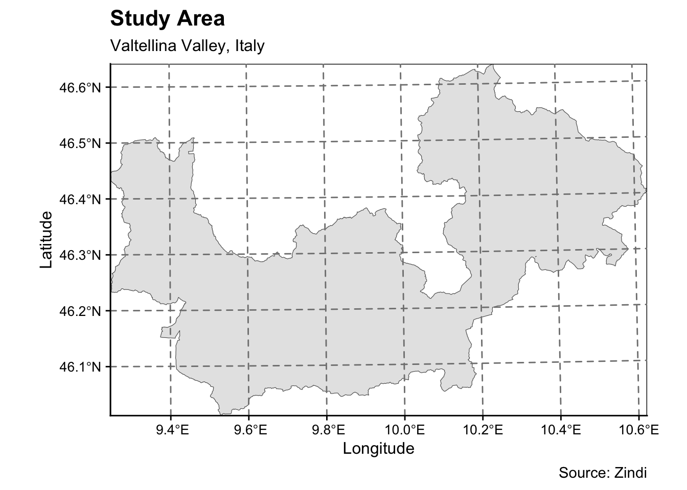
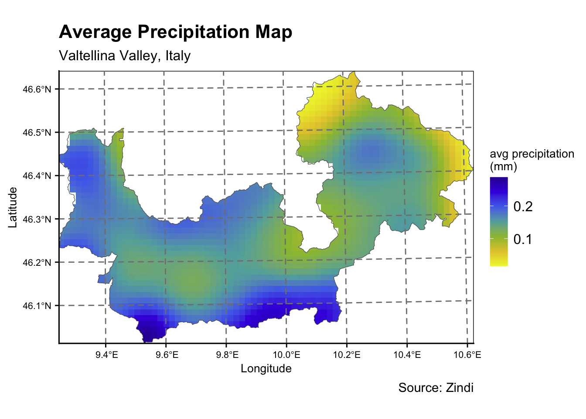
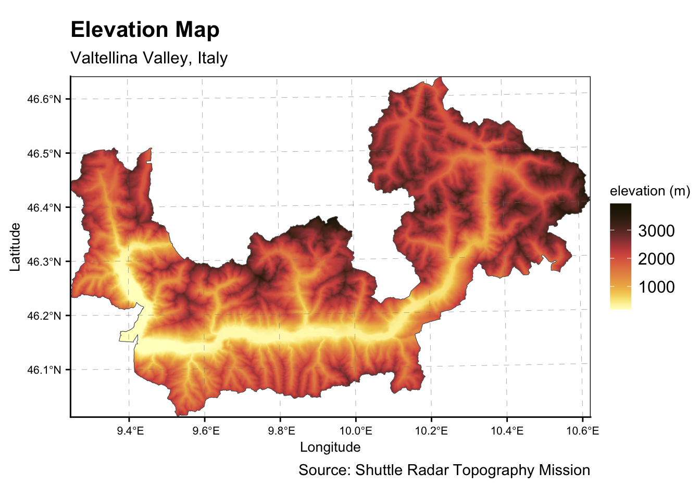
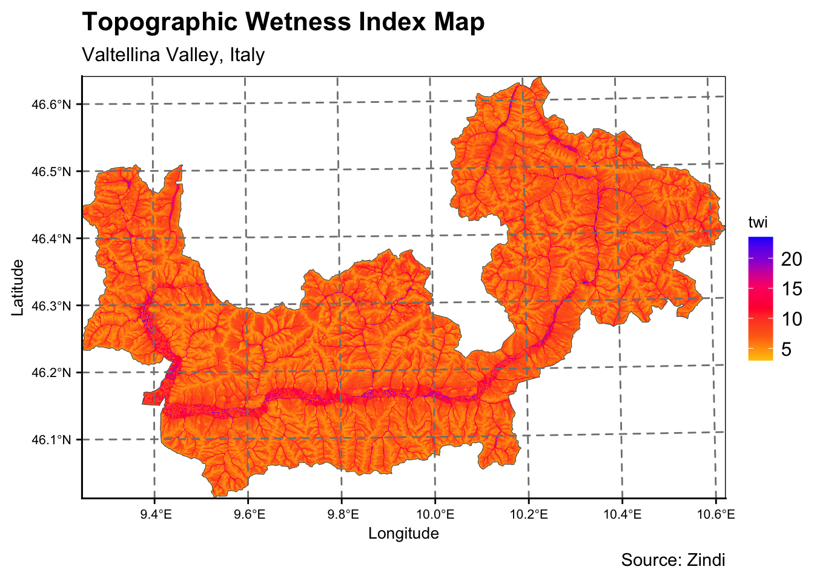
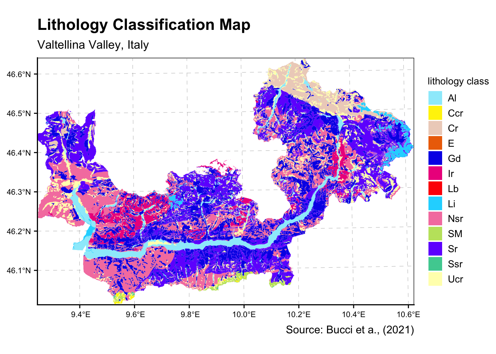
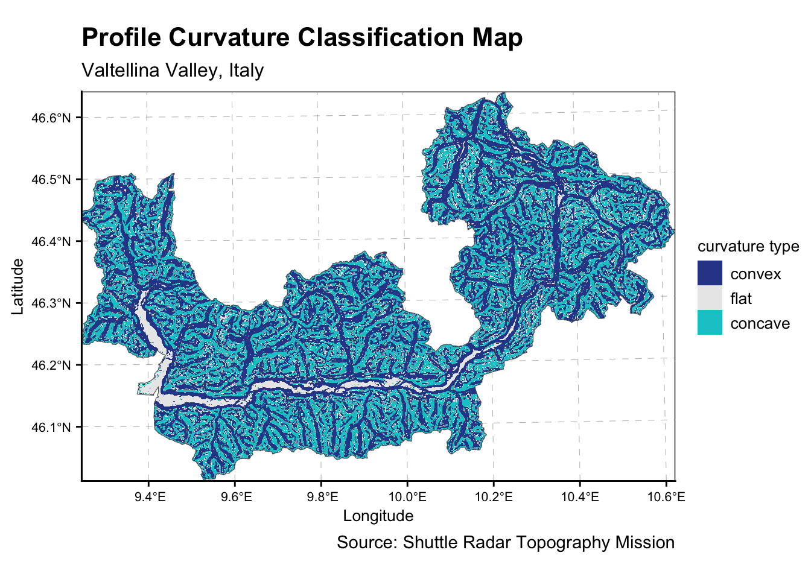
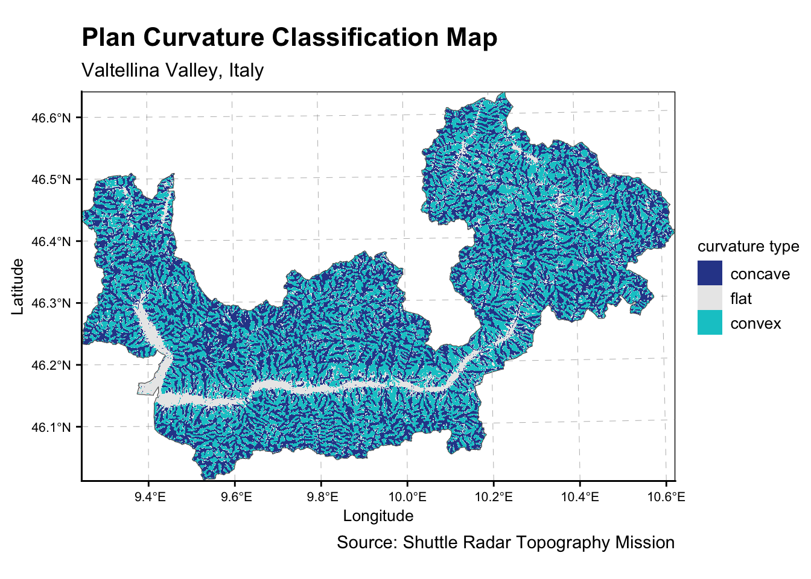

library(sp)
library(raster)
library(elevatr)
library(sf)
library(RColorBrewer)
library(classInt)
library(ggplot2)
library(terra)
library(tidyr)
library(paletteer)
library(cowplot)
library(dplyr)Project
R
sf
ggplot2
1.0 Set Up
In this section, we set up the necessary R packages for data processing and exploratory spatial data analysis. The following packages are downloaded.
sp for handling and analysing spatial data, providing classes and methods for spatial data manipulation.
sf for importing, managing, and processing geospatial data, using simple features, enabling seamless integration with other tidyverse tools.
raster for reading, writing, manipulating, analysing and modelling raster (gridded) spatial data.
elevatr for extracting elevation data from various APIs and digital elevation models.
terra for spatial data analysis with vector (points, lines, polygons) and raster (grid) data
tidyr for creating tidy data, where each column is a variable, each row is an observation, and each cell contains a single value.
dplyr for data manipulation and wrangling
ggplot2for visualizing data into static and interactive graphics, based on The Grammar of Graphics paradigm.
cowplot for creating complex and publication-quality multi-panel plots with added features and themes, an extension to ggplot2
classInt for classifying numeric data into intervals or classes, for mapping or other graphics purposes
RColorBrewer for creating visually appealing plots, particularly useful for thematic mapping.
paletteer for accessing a diverse collection of color palettes for data visualization.
2.0 Import
In this section, I will import the necessary datasets (both spatial and geospatial) into R environment.
valtellina <- read_sf(dsn = "./data/vector", layer = "valtellina")
precipitation <-raster("data/raster/avgprecipitation_mm.tif")
elevation <-raster("data/raster/elevation_m.tiff")
twi <-raster("data/raster/twi_.tif")
lithology <- read_sf(dsn = "./data/vector", layer = "lithology_cat")
profile_c <- raster("data/raster/profile_curvature_cat.tif")
plan_c <- raster("data/raster/plan_curvature_cat.tif")3.0 Study Area
Before creating thematic maps for each landslide parameter, a map is created to plot the study area of this project, Valtellina Valley in Italy using ggplot package.
ggplot(data = valtellina) +
geom_sf()+
coord_sf(expand=FALSE)+
labs(x='Longitude',y='Latitude',
title="Study Area",
subtitle='Valtellina Valley, Italy',
caption='Source: Zindi') +
cowplot::theme_cowplot()+
theme(panel.grid.major = element_line(color = gray(.5),
linetype = 'dashed',
linewidth = 0.1),
panel.grid.minor = element_blank(),
panel.background = element_rect(fill=NA,color = 'black'),
panel.ontop = TRUE,
axis.title.x = element_text(size = 12),
axis.title.y = element_text(size = 12),
axis.text.x = element_text(size = 10),
axis.text.y = element_text(size = 10))
4.0 Fixing CRS References
Map projection is an important property of a geospatial data. In order to perform geoprocessing using geospatial data, we need to ensure that data are projected using the appropriate and standard coordinate system. For this project, we use EPSG:32632 (WGS 84 / UTM zone 32N) for all the datasets.
valtellina <- st_set_crs(valtellina,32632)
precipitation <- projectRaster(precipitation, crs = crs(valtellina))5.0 Create Database
Before plotting the thematic maps with ggplot2, raster datasets are converted into data frames.
precipitation_df <- as.data.frame(precipitation,xy=TRUE)%>%drop_na()
tail(precipitation_df) x y avgprecipitation_mm
4737030 540976.3 5095477 0.2868658
4737031 541002.7 5095477 0.2868658
4737032 541029.1 5095477 0.2868658
4737033 541055.5 5095477 0.2868658
4737034 541081.9 5095477 0.2868658
4737035 541108.3 5095477 0.2868658elevation_df <- as.data.frame(elevation,xy=TRUE)%>%drop_na()
twi_df <- as.data.frame(twi,xy=TRUE)%>%drop_na()
lithology_df <- as.data.frame(lithology,xy=TRUE)%>%drop_na()
profile_c_df <- as.data.frame(profile_c,xy=TRUE)%>%drop_na()
plan_c_df <- as.data.frame(plan_c,xy=TRUE)%>%drop_na()6.0 Plot with ggplot2
geom_raster() allows for visualizing tiles (such as raster).
geom_sf() allows for visualizing sf objects. Conveniently, geom_sf() automatically detects the geometry type of spatial objects stored in sf and draw maps accordingly.
ggplot()+
geom_raster(aes(x=x,y=y,fill=avgprecipitation_mm),data=precipitation_df)+
geom_sf(fill='transparent',data=valtellina)+
scale_fill_gradientn('avg precipitation \n(mm)', colours=c("#eff635","#e4c838","#99bf3e","#61adab","#5071ea","#4225df","#3310a2"))+
coord_sf(expand=FALSE)+
labs(x='Longitude',y='Latitude',
title="Average Precipitation Map",
subtitle='Valtellina Valley, Italy',
caption='Source: Zindi') +
cowplot::theme_cowplot()+
theme(panel.grid.major = element_line(color = gray(.5),
linetype = 'dashed',
linewidth = 0.1),
panel.grid.minor = element_blank(),
panel.background = element_rect(fill=NA,color = 'black'),
panel.ontop = TRUE,
axis.title.x = element_text(size = 10),
axis.title.y = element_text(size = 10),
axis.text.x = element_text(size = 8),
axis.text.y = element_text(size = 8),
legend.title = element_text(size = 10))
ggplot()+
geom_raster(aes(x=x,y=y,fill=elevation_m),data=elevation_df)+
geom_sf(fill='transparent',data=valtellina)+
scico::scale_fill_scico('elevation (m)',direction = -1,palette = "lajolla")+
coord_sf(expand=FALSE)+
labs(x='Longitude',y='Latitude',
title="Elevation Map",
subtitle='Valtellina Valley, Italy',
caption='Source: Shuttle Radar Topography Mission') +
cowplot::theme_cowplot()+
theme(panel.grid.major = element_line(color = gray(.5),
linetype = 'dashed',
linewidth = 0.1),
panel.grid.minor = element_blank(),
panel.background = element_rect(fill=NA,color = 'black'),
panel.ontop = TRUE,
axis.title.x = element_text(size = 10),
axis.title.y = element_text(size = 10),
axis.text.x = element_text(size = 8),
axis.text.y = element_text(size = 8),
legend.title = element_text(size = 10))
ggplot()+
geom_raster(aes(x=x,y=y,fill=twi_),data=twi_df)+
geom_sf(fill='transparent',data=valtellina)+
scale_fill_gradientn('twi', colours=c("#ffc803","#fe6b15","#ff2a36","#fd0275","#9d00d7","#0000fe"))+
coord_sf(expand=FALSE)+
labs(x='Longitude',y='Latitude',
title="Topographic Wetness Index Map",
subtitle='Valtellina Valley, Italy',
caption='Source: Zindi') +
cowplot::theme_cowplot()+
theme(panel.grid.major = element_line(color = gray(.5),
linetype = 'dashed',
linewidth = 0.1),
panel.grid.minor = element_blank(),
panel.background = element_rect(fill=NA,color = 'black'),
panel.ontop = TRUE,
axis.title.x = element_text(size = 10),
axis.title.y = element_text(size = 10),
axis.text.x = element_text(size = 8),
axis.text.y = element_text(size = 8),
legend.title = element_text(size = 10))
Lithology
litho_colors <-c("#9cecfb","#fff204","#eed2c4","#ed6f05","#0d07e8",
"#ee138d","#fe0902","#1bd7ff","#f582af","#c0e36c",
"#712dfe","#4ccea0","#fffeba")
# Plotting
ggplot()+
geom_sf(aes(fill=code),color='transparent',data=lithology)+
scale_fill_manual(name = "lithology class",
values = litho_colors,
na.translate = FALSE)+
coord_sf(expand=FALSE)+
labs(title="Lithology Classification Map",
subtitle='Valtellina Valley, Italy',
caption=c('Source: Bucci et a., (2021)'))+
cowplot::theme_cowplot()+
theme(panel.grid.major = element_line(color = gray(.5),
linetype = 'dashed',
linewidth = 0.1),
panel.grid.minor = element_blank(),
panel.background = element_rect(fill=NA,color = 'black'),
panel.ontop = FALSE,
axis.title.x = element_text(size = 10),
axis.title.y = element_text(size = 10),
axis.text.x = element_text(size = 8),
axis.text.y = element_text(size = 8),
legend.title = element_text(size = 10),
legend.text = element_text(size = 10))
7.0 Reclassify Raster data
reclass_df <- c(-Inf, -0.0001, 1,
-0.0001, 0.0001, 2,
0.0001, Inf, 3)
reclass_df
reclass_m <- matrix(reclass_df,ncol = 3,byrow = TRUE)
profile_classifed <- reclassify(profile_c,reclass_m)
profile_classifed_df <- as.data.frame(profile_classifed,xy=TRUE)%>%drop_na()
profile_codes <- unique(profile_classifed_df["profile_curvature_cat"])
profile_names <-c("convex", "flat", "concave")
profile_colors <-c("#65451F","#FEFAE0","#A9B388")
plan_classifed <- reclassify(plan_c,reclass_m)
plan_classifed_df <- as.data.frame(plan_classifed,xy=TRUE)%>%drop_na()
plan_codes <- unique(plan_classifed_df["plan_curvature_cat"])
plan_names <-c("concave", "flat", "convex")
plan_colors <-c("#65451F","#FEFAE0","#A9B388")
ggplot(data=profile_classifed_df)+
geom_raster(aes(x=x,y=y,fill=as.character(profile_curvature_cat)))+
geom_sf(fill='transparent',data=valtellina)+
scale_fill_manual(name = "curvature type",
values = profile_colors,
labels = profile_names,
na.translate = FALSE)+
coord_sf(expand=FALSE)+
labs(x='Longitude',y='Latitude',
title="Profile Curvature Classification Map",
subtitle='Valtellina Valley, Italy',
caption='Source: Shuttle Radar Topography Mission') +
cowplot::theme_cowplot()+
theme(panel.grid.major = element_line(color = gray(.5),
linetype = 'dashed',
linewidth = 0.1),
panel.grid.minor = element_blank(),
panel.background = element_rect(fill=NA,color = 'black'),
panel.ontop = FALSE,
axis.title.x = element_text(size = 10),
axis.title.y = element_text(size = 10),
axis.text.x = element_text(size = 8),
axis.text.y = element_text(size = 8),
legend.title = element_text(size = 10),
legend.text = element_text(size = 10))
ggplot(data=plan_classifed_df)+
geom_raster(aes(x=x,y=y,fill=as.character(plan_curvature_cat)))+
geom_sf(fill='transparent',data=valtellina)+
scale_fill_manual(name = "curvature type",
values = plan_colors,
labels = plan_names,
na.translate = FALSE)+
coord_sf(expand=FALSE)+
labs(x='Longitude',y='Latitude',
title="Plan Curvature Classification Map",
subtitle='Valtellina Valley, Italy',
caption='Source: Shuttle Radar Topography Mission') +
cowplot::theme_cowplot()+
theme(panel.grid.major = element_line(color = gray(.5),
linetype = 'dashed',
linewidth = 0.1),
panel.grid.minor = element_blank(),
panel.background = element_rect(fill=NA,color = 'black'),
panel.ontop = FALSE,
axis.title.x = element_text(size = 10),
axis.title.y = element_text(size = 10),
axis.text.x = element_text(size = 8),
axis.text.y = element_text(size = 8),
legend.title = element_text(size = 10),
legend.text = element_text(size = 10))